鈍器(棍棒) をドロップするmob一覧
一覧ページへ
| 斧骸骨戦士 | アンデット | 一般1 | |||||||
|---|---|---|---|---|---|---|---|---|---|
 | 両手剣(410) | 鈍器(270) | 矢(410) | 足(230) | 槍投擲機(210) | 帰還(160) | 鎌(410) | 魔弾(410) | |
| 骸骨狂戦士 | アンデット | 一般3 | |||||||
 | 両手剣(360) | 鈍器(240) | 矢(360) | 足(200) | 槍投擲機(180) | 帰還(140) | 鎌(360) | 魔弾(240) | |
| 地獄の斧 | アンデット | ボス1 | |||||||
 | 両手剣(470) | 鈍器(310) | 盾(470) | 足(260) | 槍投擲機(240) | 帰還(190) | 鎌(470) | ||
| 大型骸骨 | アンデット | 一般1 | |||||||
 | 鈍器(410) | 両手剣(270) | 弾(410) | 職業鎧(230) | 冠(210) | 能力向上1(160) | 鎌(270) | ||
| 巨人骸骨 | アンデット | 一般2 | |||||||
 | 鈍器(380) | 牙(250) | 矢(380) | 職業鎧(210) | 指輪(190) | 能力向上1(150) | 双剣(250) | 魔弾(380) | |
| 骸骨騎士 | アンデット | 一般3 | |||||||
 | 鈍器(360) | スリング(240) | 矢(360) | 職業鎧(200) | 爪(180) | 能力向上1(140) | 魔弾(360) | ||
| デスナイト | アンデット | セミ1 | |||||||
 | 鈍器(390) | 牙(260) | 弾(390) | 鎧(220) | 爪(200) | 能力向上1(160) | 双剣(260) | ||
| 地獄の騎士 | アンデット | ボス1 | |||||||
 | 鈍器(470) | ステッキ(310) | 矢(470) | 鎧(260) | 爪(240) | 能力向上1(190) | 魔弾(470) | ||
| 偽伝道師 | 人間 | 一般2 | |||||||
 | 鈍器(380) | 翼(250) | 盾(380) | 職業鎧(210) | 冠(190) | 十字架(180) | 水晶(250) | ||
| エクソシスト | 人間 | 一般3 | |||||||
 | 鈍器(360) | 翼(240) | 状態異常回復2(90) | 職業鎧(200) | 冠(180) | 十字架(190) | 水晶(240) | ||
| 偽聖職者 | 人間 | 一般4 | |||||||
 | 鈍器(300) | 翼(200) | 盾(300) | 職業鎧(170) | 首(150) | 十字架(200) | 水晶(200) | ||
| ダークプリースト | 人間 | セミ2 | |||||||
 | 鈍器(420) | 翼(280) | 状態異常回復2(110) | 職業鎧(230) | 首(210) | 十字架(210) | 水晶(280) | ||
| ダークビショップ | 人間 | ボス2 | |||||||
| 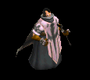 | 鈍器(490) | 翼(330) | 盾(490) | 兜・帽子(270) | 首(250) | 十字架(220) | 水晶(330) | ||
| オーク | 人間 | 一般3 | |||||||
 | 鈍器(360) | 牙(240) | 弾(360) | 足(200) | 冠(180) | 帰還(140) | 双剣(240) | ||
| ジャイアント | 人間 | セミ1 | |||||||
 | 鈍器(390) | 牙(260) | HP回復(390) | 足(220) | 首(200) | 能力向上1(160) | 双剣(260) | ||
| コロッサス | 人間 | ボス1 | |||||||
 | 鈍器(470) | 牙(310) | HP回復(470) | 足(260) | 指輪(240) | 能力向上1(190) | 双剣(310) | ||
| オーガ | 悪魔 | 一般3 | |||||||
 | 鈍器(360) | 杖(240) | イベント(360) | 鎧(200) | イヤリング(180) | 能力向上1(140) | 本(240) | ||
| オーガソルジャー | 悪魔 | 一般4 | |||||||
 | 鈍器(300) | スリング(200) | 弾(300) | 鎧(170) | イヤリング(150) | 能力向上1(120) | |||
| オーガチーフ | 悪魔 | セミ1 | |||||||
 | 鈍器(390) | 杖(260) | 状態異常回復1(390) | 鎧(220) | イヤリング(200) | 能力向上1(160) | 本(260) | ||
| オーガゼネラル | 悪魔 | ボス2 | |||||||
 | 鈍器(490) | 杖(330) | 状態異常回復2(120) | 鎧(270) | イヤリング(250) | 能力向上1(200) | 本(330) | ||
| ゴートマン | 悪魔 | 一般1 | |||||||
| 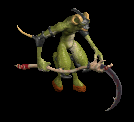 | 笛(410) | 鈍器(270) | 状態異常回復2(100) | マント(230) | 冠(210) | 能力向上1(160) | |||
| ストーントルド | 悪魔 | セミ3 | |||||||
| 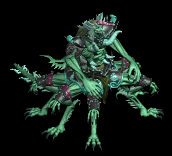 | none(450) | 鈍器(300) | 盾(450) | 腰(250) | 手首(230) | 能力向上2(180) | |||
| 蟲 | 動物 | 一般1 | |||||||
 | 鈍器(410) | スリング(270) | イベント(410) | マント(230) | 冠(210) | 帰還(160) | |||
| リーチ | 動物 | 一般2 | |||||||
 | 鈍器(380) | 片手剣(250) | イベント(380) | マント(210) | 冠(190) | 帰還(150) | クロー(250) | ||
| マゴット | 動物 | 一般3 | |||||||
 | 鈍器(360) | スリング(240) | イベント(360) | マント(200) | 冠(180) | 帰還(140) | |||
| クローラー | 動物 | 一般4 | |||||||
 | 鈍器(300) | 片手剣(200) | イベント(300) | マント(170) | 冠(150) | 帰還(120) | クロー(200) | ||
| クリーパー | 動物 | セミ1 | |||||||
 | 鈍器(390) | スリング(260) | イベント(390) | マント(220) | 冠(200) | 帰還(160) | |||
| ダイアーウルフ | 動物 | セミ2 | |||||||
| 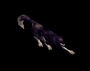 | 牙(420) | 鈍器(280) | cP回復(420) | 足(230) | 槍投擲機(210) | 特殊1(170) | 双剣(420) | ||
| 弓張月熊 | 動物 | ボス3 | |||||||
 | 牙(510) | 鈍器(340) | HP回復(510) | マント(280) | 爪(260) | 宝石(200) | 双剣(510) | ||
| ダイヤゴーレム | 神獣 | ボス1 | |||||||
 | 鎌(100) | 両手剣(100) | 鈍器(310) | ||||||
| ニックス | 神獣 | 一般2 | |||||||
| 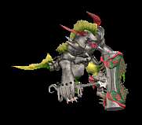 | クロー(250) | 鈍器(100) | 片手剣(250) | ||||||
| メロウ | 神獣 | 一般3 | |||||||
 | クロー(240) | 鈍器(100) | 片手剣(240) | ||||||
| マーマン | 神獣 | 一般4 | |||||||
| 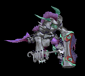 | クロー(200) | 鈍器(100) | 片手剣(200) | ||||||
| マーマンファイタ | 神獣 | セミ2 | |||||||
 | クロー(280) | 鈍器(100) | 片手剣(280) | ||||||
| トリトン | 神獣 | ボス2 | |||||||
 | クロー(330) | 鈍器(100) | 片手剣(330) | ||||||
| エンティング | 神獣 | セミ1 | |||||||
 | 杖(390) | 鈍器(260) | 本(390) | ||||||
| 斧骸骨戦士Ex | アンデット | 一般1 | |||||||
| 両手剣(410) | 鈍器(270) | 矢(410) | 足(230) | 槍投擲機(210) | 帰還(160) | 鎌(410) | 魔弾(410) | |
| 骸骨狂戦士Ex | アンデット | 一般3 | |||||||
| 両手剣(360) | 鈍器(240) | 矢(360) | 足(200) | 槍投擲機(180) | 帰還(140) | 鎌(360) | 魔弾(360) | |
| 地獄の斧Ex | アンデット | ボス1 | |||||||
| 両手剣(1200) | 鈍器(800) | 盾(1200) | 足(670) | 槍投擲機(600) | 帰還(480) | 鎌(1200) | ||
| 大型骸骨Ex | アンデット | 一般1 | |||||||
| 鈍器(410) | 両手剣(270) | 弾(410) | 職業鎧(230) | 冠(210) | 能力向上1(160) | 鎌(270) | ||
| 巨人骸骨Ex | アンデット | 一般2 | |||||||
| 鈍器(380) | 牙(250) | 矢(380) | 職業鎧(210) | 指輪(190) | 能力向上1(150) | 双剣(250) | 魔弾(380) | |
| 骸骨騎士Ex | アンデット | 一般3 | |||||||
| 鈍器(360) | スリング(240) | 矢(360) | 職業鎧(200) | 爪(180) | 能力向上1(140) | 魔弾(360) | ||
| デスナイトEx | アンデット | セミ1 | |||||||
| 鈍器(450) | 牙(300) | 弾(450) | 鎧(250) | 爪(230) | 能力向上1(180) | 双剣(300) | ||
| 地獄の騎士Ex | アンデット | ボス1 | |||||||
| 鈍器(1200) | ステッキ(800) | 矢(1200) | 鎧(670) | 爪(600) | 能力向上1(480) | 魔弾(1200) | ||
| 偽伝道師Ex | 人間 | 一般2 | |||||||
| 鈍器(380) | 翼(250) | 盾(380) | 職業鎧(210) | 冠(190) | 十字架(180) | 水晶(250) | ||
| エクソシストEx | 人間 | 一般3 | |||||||
| 鈍器(360) | 翼(240) | 状態異常回復2(90) | 職業鎧(200) | 冠(180) | 十字架(190) | 水晶(240) | ||
| 偽聖職者Ex | 人間 | 一般4 | |||||||
| 鈍器(300) | 翼(200) | 盾(300) | 職業鎧(170) | 首(150) | 十字架(200) | 水晶(200) | ||
| ダークプリーストEx | 人間 | セミ2 | |||||||
| 鈍器(650) | 翼(430) | 状態異常回復2(160) | 職業鎧(360) | 首(330) | 十字架(210) | 水晶(430) | ||
| ダークビショップEx | 人間 | ボス2 | |||||||
| 鈍器(2000) | 翼(1330) | 盾(2000) | 兜・帽子(1110) | 首(1000) | 十字架(220) | 水晶(1330) | |||
| オークEx | 人間 | 一般3 | |||||||
| 鈍器(360) | 牙(240) | 弾(360) | 足(200) | 冠(180) | 帰還(140) | 双剣(240) | ||
| ジャイアントEx | 人間 | セミ1 | |||||||
| 鈍器(450) | 牙(300) | HP回復(450) | 足(250) | 首(230) | 能力向上1(180) | 双剣(300) | ||
| コロッサスEx | 人間 | ボス1 | |||||||
| 鈍器(1200) | 牙(800) | HP回復(1200) | 足(670) | 指輪(600) | 能力向上1(480) | 双剣(800) | ||
| オーガEx | 悪魔 | 一般3 | |||||||
| 鈍器(360) | 杖(240) | イベント(360) | 鎧(200) | イヤリング(180) | 能力向上1(140) | 本(240) | ||
| オーガソルジャーEx | 悪魔 | 一般4 | |||||||
| 鈍器(300) | スリング(200) | 弾(300) | 鎧(170) | イヤリング(150) | 能力向上1(120) | |||
| オーガチーフEx | 悪魔 | セミ1 | |||||||
| 鈍器(450) | 杖(300) | 状態異常回復1(450) | 鎧(250) | イヤリング(230) | 能力向上1(180) | 本(300) | ||
| オーガゼネラルEx | 悪魔 | ボス2 | |||||||
| 鈍器(2000) | 杖(1330) | 状態異常回復2(500) | 鎧(1110) | イヤリング(1000) | 能力向上1(800) | 本(1330) | ||
| ゴートマンEx | 悪魔 | 一般1 | |||||||
| 笛(410) | 鈍器(270) | 状態異常回復2(100) | マント(230) | 冠(210) | 能力向上1(160) | ||||
| ストーントルドEx | 悪魔 | セミ3 | |||||||
| none(800) | 鈍器(530) | 盾(800) | 腰(440) | 手首(400) | 能力向上2(320) | ||||
| ワームEx | 動物 | 一般1 | |||||||
| 鈍器(410) | スリング(270) | イベント(410) | マント(230) | 冠(210) | 帰還(160) | |||
| リーチEx | 動物 | 一般2 | |||||||
| 鈍器(380) | 片手剣(250) | イベント(380) | マント(210) | 冠(190) | 帰還(150) | クロー(250) | ||
| マゴットEx | 動物 | 一般3 | |||||||
| 鈍器(360) | スリング(240) | イベント(360) | マント(200) | 冠(180) | 帰還(140) | |||
| クローラーEx | 動物 | 一般4 | |||||||
| 鈍器(300) | 片手剣(200) | イベント(300) | マント(170) | 冠(150) | 帰還(120) | クロー(200) | ||
| クリーパーEx | 動物 | セミ1 | |||||||
| 鈍器(450) | スリング(300) | イベント(450) | マント(250) | 冠(230) | 帰還(180) | |||
| ダイアーウルフEx | 動物 | セミ2 | |||||||
| 牙(650) | 鈍器(430) | cP回復(650) | 足(360) | 槍投擲機(330) | 特殊1(260) | 双剣(650) | |||
| 弓張月熊Ex | 動物 | ボス3 | |||||||
| 牙(2800) | 鈍器(1870) | HP回復(2800) | マント(1560) | 爪(1400) | 宝石(1120) | 双剣(2800) | ||
| ダイヤゴーレムEx | 神獣 | ボス1 | |||||||
| 両手剣(1200) | 鈍器(800) | 状態異常回復2(300) | 足(670) | 冠(600) | 腕刺青(170) | 鎌(1200) | ||
| ニックスEx | 神獣 | 一般2 | |||||||
| 鈍器(380) | 片手剣(250) | 鍵(30) | 鎧(210) | イヤリング(190) | 肩刺青(110) | クロー(250) | |||
| メロウEx | 神獣 | 一般3 | |||||||
| 鈍器(360) | 片手剣(240) | イベント(360) | 鎧(200) | イヤリング(180) | 肩刺青(120) | クロー(240) | ||
| マーマンEx | 神獣 | 一般4 | |||||||
| 鈍器(300) | 片手剣(200) | イベント(300) | 鎧(170) | イヤリング(150) | 肩刺青(130) | クロー(200) | |||
| マーマンファイタEx | 神獣 | セミ2 | |||||||
| 鈍器(650) | 片手剣(430) | イベント(650) | 鎧(360) | イヤリング(330) | 肩刺青(140) | クロー(430) | ||
| トリトンEx | 神獣 | ボス2 | |||||||
| 鈍器(2000) | 片手剣(1330) | 鍵(210) | 鎧(1110) | イヤリング(1000) | 肩刺青(150) | クロー(1330) | ||
| エンティングEx | 神獣 | セミ1 | |||||||
| 杖(450) | 鈍器(300) | HP回復(450) | 腰(250) | イヤリング(230) | 能力向上1(180) | 本(450) | ||
| 斧骸骨戦士Zin | アンデット | 一般1 | |||||||
| 両手剣(1210) | 鈍器(810) | 矢(1210) | 足(670) | 槍投擲機(610) | 帰還(480) | 鎌(1210) | 魔弾(1210) | |
| 骸骨狂戦士Zin | アンデット | 一般3 | |||||||
| 両手剣(1560) | 鈍器(1040) | 矢(1560) | 足(870) | 槍投擲機(780) | 帰還(620) | 鎌(1560) | 魔弾(1560) | |
| 地獄の斧Zin | アンデット | ボス1 | |||||||
| 両手剣(1000) | 鈍器(670) | 盾(1000) | 足(560) | 槍投擲機(500) | 帰還(400) | 鎌(1000) | ||
| 大型骸骨Zin | アンデット | 一般1 | |||||||
| 鈍器(1210) | 両手剣(810) | 弾(1210) | 職業鎧(670) | 冠(610) | 能力向上1(480) | 鎌(810) | ||
| 巨人骸骨Zin | アンデット | 一般2 | |||||||
| 鈍器(1380) | 牙(920) | 矢(1380) | 職業鎧(770) | 指輪(690) | 能力向上1(550) | 双剣(920) | 魔弾(1380) | |
| 骸骨騎士Zin | アンデット | 一般3 | |||||||
| 鈍器(1560) | スリング(1040) | 矢(1560) | 職業鎧(870) | 爪(780) | 能力向上1(620) | 魔弾(1560) | ||
| デスナイトZin | アンデット | セミ1 | |||||||
| 鈍器(650) | 牙(430) | 弾(650) | 鎧(360) | 爪(330) | 能力向上1(260) | 双剣(430) | ||
| 地獄の騎士Zin | アンデット | ボス1 | |||||||
| 鈍器(1000) | ステッキ(670) | 矢(1000) | 鎧(560) | 爪(500) | 能力向上1(400) | 魔弾(1000) | ||
| 偽伝道師Zin | 人間 | 一般2 | |||||||
| 鈍器(1380) | 翼(920) | 盾(1380) | 職業鎧(770) | 冠(690) | 十字架(180) | 水晶(920) | ||
| エクソシストZin | 人間 | 一般3 | |||||||
| 鈍器(1560) | 翼(1040) | 状態異常回復2(390) | 職業鎧(870) | 冠(780) | 十字架(190) | 水晶(1040) | ||
| 偽聖職者Zin | 人間 | 一般4 | |||||||
| 鈍器(1200) | 翼(800) | 盾(1200) | 職業鎧(670) | 首(600) | 十字架(200) | 水晶(800) | ||
| ダークプリーストZin | 人間 | セミ2 | |||||||
| 鈍器(750) | 翼(500) | 状態異常回復2(190) | 職業鎧(420) | 首(380) | 十字架(210) | 水晶(500) | ||
| ダークビショップZin | 人間 | ボス2 | |||||||
| 鈍器(1100) | 翼(730) | 盾(1100) | 兜・帽子(610) | 首(550) | 十字架(220) | 水晶(730) | |||
| オークZin | 人間 | 一般3 | |||||||
| 鈍器(1560) | 牙(1040) | 弾(1560) | 足(870) | 冠(780) | 帰還(620) | 双剣(1040) | ||
| ジャイアントZin | 人間 | セミ1 | |||||||
| 鈍器(650) | 牙(430) | HP回復(650) | 足(360) | 首(330) | 能力向上1(260) | 双剣(430) | ||
| コロッサスZin | 人間 | ボス1 | |||||||
| 鈍器(1000) | 牙(670) | HP回復(1000) | 足(560) | 指輪(500) | 能力向上1(400) | 双剣(670) | ||
| オーガZin | 悪魔 | 一般3 | |||||||
| 鈍器(1560) | 杖(1040) | イベント(1560) | 鎧(870) | イヤリング(780) | 能力向上1(620) | 本(1040) | ||
| オーガソルジャーZin | 悪魔 | 一般4 | |||||||
| 鈍器(1200) | スリング(800) | 弾(1200) | 鎧(670) | イヤリング(600) | 能力向上1(480) | |||
| オーガチーフZin | 悪魔 | セミ1 | |||||||
| 鈍器(650) | 杖(430) | 状態異常回復1(650) | 鎧(360) | イヤリング(330) | 能力向上1(260) | 本(430) | ||
| オーガゼネラルZin | 悪魔 | ボス2 | |||||||
| 鈍器(1100) | 杖(730) | 状態異常回復2(280) | 鎧(610) | イヤリング(550) | 能力向上1(440) | 本(730) | ||
| ゴートマンZin | 悪魔 | 一般1 | |||||||
| 笛(1210) | 鈍器(810) | 状態異常回復2(300) | マント(670) | 冠(610) | 能力向上1(480) | ||||
| ストーントルドZin | 悪魔 | セミ3 | |||||||
 | none(900) | 鈍器(600) | 盾(900) | 腰(500) | 手首(450) | 能力向上2(360) | |||
| 蟲Zin | 動物 | 一般1 | |||||||
| 鈍器(1210) | スリング(810) | イベント(1210) | マント(670) | 冠(610) | 帰還(480) | |||
| リーチZin | 動物 | 一般2 | |||||||
| 鈍器(1380) | 片手剣(920) | イベント(1380) | マント(770) | 冠(690) | 帰還(550) | クロー(920) | ||
| マゴットZin | 動物 | 一般3 | |||||||
| 鈍器(1560) | スリング(1040) | イベント(1560) | マント(870) | 冠(780) | 帰還(620) | |||
| クローラーZin | 動物 | 一般4 | |||||||
| 鈍器(1200) | 片手剣(800) | イベント(1200) | マント(670) | 冠(600) | 帰還(480) | クロー(800) | ||
| クリーパーZin | 動物 | セミ1 | |||||||
| 鈍器(650) | スリング(430) | イベント(650) | マント(360) | 冠(330) | 帰還(260) | |||
| ダイアーウルフZin | 動物 | セミ2 | |||||||
| 牙(750) | 鈍器(500) | cP回復(750) | 足(420) | 槍投擲機(380) | 特殊1(300) | 双剣(750) | |||
| 弓張月熊Zin | 動物 | ボス3 | |||||||
| 牙(1200) | 鈍器(800) | HP回復(1200) | マント(670) | 爪(600) | 宝石(480) | 双剣(1200) | ||
| ダイヤゴーレムZin | 神獣 | ボス1 | |||||||
| 両手剣(1000) | 鈍器(670) | 状態異常回復2(250) | 足(560) | 冠(500) | 腕刺青(170) | 鎌(1000) | ||
| ニックスZin | 神獣 | 一般2 | |||||||
| 鈍器(1380) | 片手剣(920) | 鍵(70) | 鎧(770) | イヤリング(690) | 肩刺青(110) | クロー(920) | |||
| メロウZin | 神獣 | 一般3 | |||||||
| 鈍器(1560) | 片手剣(1040) | イベント(1560) | 鎧(870) | イヤリング(780) | 肩刺青(120) | クロー(1040) | ||
| マーマンZin | 神獣 | 一般4 | |||||||
| 鈍器(1200) | 片手剣(800) | イベント(1200) | 鎧(670) | イヤリング(600) | 肩刺青(130) | クロー(800) | |||
| マーマンファイタZin | 神獣 | セミ2 | |||||||
| 鈍器(750) | 片手剣(500) | イベント(750) | 鎧(420) | イヤリング(380) | 肩刺青(140) | クロー(500) | ||
| トリトンZin | 神獣 | ボス2 | |||||||
| 鈍器(1100) | 片手剣(730) | 鍵(110) | 鎧(610) | イヤリング(550) | 肩刺青(150) | クロー(730) | ||
| エンティングZin | 神獣 | セミ1 | |||||||
| 杖(650) | 鈍器(430) | HP回復(650) | 腰(360) | イヤリング(330) | 能力向上1(260) | 本(650) | ||
 | 弓(1560) | 片手剣(1040) | 矢(1560) | グローブ(900) | 手首(780) | 腕刺青(170) | クロー(1040) | 銃(1560) | 魔弾(1560) |
| ジャイアント骸骨1 Zin | アンデット | セミ1 | |||||||
 | 冠(50) | 鈍器(90) | 牙(160) | 職業鎧(230) | 状態異常回復1(300) | 杖(350) | 本(350) | 双剣(160) | |
| バイキングヘッド Zin | アンデット | 一般4 | |||||||
 | 鍵(30) | 鈍器(50) | 牙(90) | 職業鎧(130) | 状態異常回復1(170) | イベント(200) | 双剣(90) | ||
| バイキングヘッド2 Zin | アンデット | ボス1 | |||||||
 | 冠(150) | 鈍器(250) | 帰還(450) | 職業鎧(650) | 肩刺青(850) | HP回復(1000) | |||
| バイキングヘッド3 Zin | アンデット | ボス2 | |||||||
 | 能力向上2(270) | 鈍器(450) | 牙(810) | 職業鎧(1170) | ステッキ(1530) | 杖(1800) | 本(1800) | 双剣(810) | |
| デスマスク2 Zin | アンデット | ボス1 | |||||||
 | 冠(150) | 鈍器(250) | 牙(450) | 職業鎧(650) | ステッキ(850) | 職業鎧(1000) | 双剣(450) | ||
| デスマスク4 Zin | アンデット | ボス3 | |||||||
 | 冠(360) | 鈍器(600) | 牙(1080) | 職業鎧(1560) | ステッキ(2040) | 杖(2400) | 本(2400) | 双剣(1080) | |
| 逃亡魔法師Zin | 人間 | 一般3 | |||||||
 | 宝石(70) | 鈍器(200) | 両手剣(130) | 槍(100) | ステッキ(30) | グローブ(40) | 鎌(130) | 箒(100) | |
| 逃亡ハンター1 Zin | 人間 | セミ1 | |||||||
 | 能力向上2(90) | 鈍器(260) | 両手剣(180) | 鞭(140) | ステッキ(40) | 宝石(50) | 鎌(180) | ||
| 逃亡ハンター2 Zin | 人間 | セミ3 | |||||||
 | 投擲(180) | 鈍器(530) | 帰還(350) | 槍(280) | ステッキ(70) | グローブ(110) | 箒(280) | ||
| 逃亡ハンター4 Zin | 人間 | ボス2 | |||||||
 | 投擲(450) | 鈍器(1350) | 両手剣(900) | 槍(720) | ステッキ(180) | グローブ(270) | 鎌(900) | 箒(720) | |
| 脱獄犯1 Zin | 人間 | セミ2 | |||||||
 | 鍵(140) | 鈍器(410) | 帰還(280) | cP回復(220) | ステッキ(60) | グローブ(80) | |||
| 脱獄犯3 Zin | 人間 | ボス1 | |||||||
| 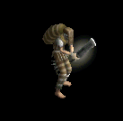 | 鍵(250) | 鈍器(750) | 両手剣(500) | 能力向上1(400) | ステッキ(100) | グローブ(150) | 鎌(500) | ||
| カマキリ戦士1 Zin | 悪魔 | セミ3 | |||||||
 | 投擲(460) | 鈍器(560) | 十字架(230) | 槍(140) | 肩刺青(70) | 翼(40) | 箒(140) | 水晶(40) | |
| カマキリ戦士2 Zin | 悪魔 | ボス1 | |||||||
 | 鍵(650) | 鈍器(800) | 弾(330) | 槍(200) | 腰(100) | イベント(50) | 箒(200) | ||
| カマキリ戦士4 Zin | 悪魔 | ボス3 | |||||||
 | 投擲(1560) | 鈍器(1920) | cP回復(790) | 槍(480) | 腰(240) | 翼(120) | 箒(480) | 水晶(120) | |
| ペンティライダー1 Zin | 悪魔 | セミ2 | |||||||
 | 投擲(360) | 鈍器(440) | 弾(180) | 槍(110) | 腰(60) | 翼(30) | 箒(110) | 水晶(30) | |
| ペンティライダー3 Zin | 悪魔 | ボス1 | |||||||
 | 鍵(650) | 鈍器(800) | 帰還(330) | 槍(200) | 腰(100) | イベント(50) | 箒(200) | ||
| ペンティライダー4 Zin | 悪魔 | ボス3 | |||||||
 | 投擲(1560) | 鈍器(1920) | 弾(790) | 槍(480) | 両手剣(240) | 翼(120) | 鎌(240) | 箒(480) | 水晶(120) |
| バッタ悪魔 Zin | 悪魔 | 一般4 | |||||||
 | 投擲(130) | 鈍器(160) | 帰還(70) | cP回復(40) | 腰(20) | HP回復(10) | |||
| バッタ悪魔2 Zin | 悪魔 | セミ3 | |||||||
 | 投擲(460) | 鈍器(560) | 腕刺青(230) | 槍(140) | 腰(70) | 職業鎧(40) | 箒(140) | ||
| バッタ悪魔3 Zin | 悪魔 | ボス1 | |||||||
 | 宝石(650) | 鈍器(800) | 弾(330) | 能力向上1(200) | 腰(100) | 翼(50) | 水晶(50) | ||
| カメレオン Zin | 動物 | 一般3 | |||||||
| 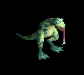 | 冠(90) | 鈍器(70) | スリング(50) | 能力向上1(40) | 弓(30) | HP回復(10) | 銃(30) | ||
| カメレオン2 Zin | 動物 | セミ3 | |||||||
 | 冠(250) | 鈍器(180) | 帰還(140) | 十字架(110) | cP回復(70) | 盾(40) | |||
| カメレオン4 Zin | 動物 | ボス3 | |||||||
 | 冠(840) | 鈍器(600) | 腕刺青(480) | 能力向上1(360) | 弓(240) | イベント(120) | 銃(240) | ||
| ラジエータカメ1 Zin | 動物 | セミ2 | |||||||
 | 冠(190) | 鈍器(140) | スリング(110) | 十字架(80) | 弓(60) | 盾(30) | 銃(60) | ||
| ラジエータカメ2 Zin | 動物 | ボス1 | |||||||
 | 鍵(350) | 鈍器(250) | cP回復(200) | 鞭(150) | 弓(100) | 盾(50) | 銃(100) | ||
| ラジエータカメ4 Zin | 動物 | ボス3 | |||||||
 | 杖(840) | 鈍器(600) | 弾(480) | 十字架(360) | 弓(240) | 盾(120) | 本(840) | 銃(240) | |
| 装甲亀1 Zin | 動物 | セミ2 | |||||||
 | 冠(190) | 鈍器(140) | cP回復(110) | 鞭(80) | 弓(60) | 盾(30) | 銃(60) | ||
| 装甲亀3 Zin | 動物 | ボス1 | |||||||
 | 冠(350) | 鈍器(250) | スリング(200) | 鞭(150) | 弓(100) | 盾(50) | 銃(100) | ||
| 装甲亀4 Zin | 動物 | ボス3 | |||||||
 | 冠(840) | 鈍器(600) | 腕刺青(480) | 能力向上1(360) | 両手剣(240) | 盾(120) | 鎌(240) | ||
| 使徒 Zin | 神獣 | 一般3 | |||||||
 | 鎧(120) | 鈍器(170) | 腕刺青(90) | 笛(10) | 肩刺青(30) | HP回復(70) | |||
| 使徒1 Zin | 神獣 | セミ1 | |||||||
 | 能力向上2(160) | 鈍器(230) | スリング(120) | 笛(20) | cP回復(40) | 盾(90) | |||
| 使徒3 Zin | 神獣 | ボス2 | |||||||
 | 鎧(810) | 鈍器(1170) | スリング(630) | 笛(90) | 矢(180) | イベント(450) | 魔弾(180) | ||
| 審判官 Zin | 神獣 | 一般4 | |||||||
 | 能力向上2(90) | 鈍器(130) | 帰還(70) | 笛(10) | 矢(20) | HP回復(50) | 魔弾(20) | ||
| 審判官2 Zin | 神獣 | セミ3 | |||||||
 | 杖(320) | 鈍器(460) | 杖(250) | 能力向上1(40) | 矢(70) | 盾(180) | 本(320) | 魔弾(70) | |
| 審判官4 Zin | 神獣 | ボス3 | |||||||
| 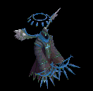 | 能力向上2(1080) | 鈍器(1560) | スリング(840) | 笛(120) | 矢(240) | イベント(600) | 魔弾(240) | ||
| ウィークネス天使 Zin | 神獣 | セミ1 | |||||||
 | 鎧(160) | 鈍器(230) | スリング(120) | 笛(20) | 状態異常回復1(40) | 盾(90) | |||
| ウィークネス天使2 Zin | 神獣 | セミ3 | |||||||
| 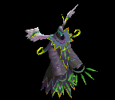 | 鎧(320) | 鈍器(460) | 腕刺青(250) | 十字架(40) | 状態異常回復1(70) | 盾(180) | |||
| ウィークネス天使3 Zin | 神獣 | ボス1 | |||||||
| 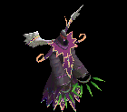 | 鎧(450) | 鈍器(650) | スリング(350) | 笛(50) | 矢(100) | 盾(250) | 魔弾(100) | ||
| ウィークネス天使4 Zin | 神獣 | ボス3 | |||||||
 | 鎧(1080) | 鈍器(1560) | スリング(840) | 笛(120) | 矢(240) | 肩刺青(600) | 魔弾(240) | ||
| 金剛石ゴーレム | 神獣 | ボス1 | |||||||
| 鎌(100) | 両手剣(100) | 鈍器(310) | ||||||
| 金剛石ゴーレム Ex | 神獣 | ボス1 | |||||||
| 両手剣(1200) | 鈍器(800) | 状態異常回復2(300) | 足(670) | 冠(600) | 腕刺青(170) | 鎌(1200) | ||
| ブルーニックス | 神獣 | 一般2 | |||||||
| クロー(250) | 鈍器(100) | 片手剣(250) | |||||||
| ブルーメロウ | 神獣 | 一般3 | |||||||
| クロー(240) | 鈍器(100) | 片手剣(240) | ||||||
| ブルーマーマン | 神獣 | 一般4 | |||||||
| クロー(200) | 鈍器(100) | 片手剣(200) | |||||||
| マーマンウォリア | 神獣 | セミ2 | |||||||
| クロー(280) | 鈍器(100) | 片手剣(280) | ||||||
| ポセイドン | 神獣 | ボス2 | |||||||
| クロー(330) | 鈍器(100) | 片手剣(330) | ||||||
| ブルーニックス Ex | 神獣 | 一般2 | |||||||
| 鈍器(380) | 片手剣(250) | 鍵(30) | 鎧(210) | イヤリング(190) | 肩刺青(110) | クロー(250) | |||
| ブルーメロウ Ex | 神獣 | 一般3 | |||||||
| 鈍器(360) | 片手剣(240) | イベント(360) | 鎧(200) | イヤリング(180) | 肩刺青(120) | クロー(240) | ||
| ブルーマーマン Ex | 神獣 | 一般4 | |||||||
| 鈍器(300) | 片手剣(200) | イベント(300) | 鎧(170) | イヤリング(150) | 肩刺青(130) | クロー(200) | |||
| マーマンウォリア Ex | 神獣 | セミ2 | |||||||
| 鈍器(650) | 片手剣(430) | イベント(650) | 鎧(360) | イヤリング(330) | 肩刺青(140) | クロー(430) | ||
| デーモン傭兵 | 悪魔 | 一般1 | |||||||
| 笛(410) | 鈍器(270) | 状態異常回復2(100) | マント(230) | 冠(210) | 能力向上1(160) | ||||
| デーモン傭兵 Ex | 悪魔 | 一般1 | |||||||
| 笛(410) | 鈍器(270) | 状態異常回復2(100) | マント(230) | 冠(210) | 能力向上1(160) | ||||
| ポセイドン Ex | 神獣 | ボス2 | |||||||
| 鈍器(2000) | 片手剣(1330) | 鍵(210) | 鎧(1110) | イヤリング(1000) | 肩刺青(150) | クロー(1330) | ||
| スコフィールダー Zin | 人間 | 一般4 | |||||||
| 宝石(70) | 鈍器(200) | 両手剣(130) | 槍(100) | ステッキ(30) | グローブ(40) | 鎌(130) | 箒(100) | |
| カラフルトカゲ Zin | 動物 | 一般4 | |||||||
| 冠(90) | 鈍器(70) | スリング(50) | 能力向上1(40) | 弓(30) | HP回復(10) | 銃(30) | |||
| アーカン Zin | 神獣 | 一般4 | |||||||
| 能力向上2(90) | 鈍器(130) | 帰還(70) | 笛(10) | 矢(20) | HP回復(50) | 魔弾(20) | ||
| 時の老樹 Zin | 神獣 | セミ1 | |||||||
| 杖(650) | 鈍器(430) | HP回復(650) | 腰(360) | イヤリング(330) | 能力向上1(260) | 本(650) | ||
| モリネル守護神 | 神獣 | ボス1 | |||||||
| 両手剣(1000) | 鈍器(670) | 状態異常回復2(250) | 足(560) | 冠(500) | 腕刺青(170) | 鎌(1000) | ||
| カラフルトカゲ Zin | 動物 | 一般4 | |||||||
| 冠(90) | 鈍器(70) | スリング(50) | 能力向上1(40) | 弓(30) | HP回復(10) | 銃(30) | |||
| スコフィールダー Zin | 人間 | 一般4 | |||||||
| 宝石(70) | 鈍器(200) | 両手剣(130) | 槍(100) | ステッキ(30) | グローブ(40) | 鎌(130) | 箒(100) | |
| マゴットEv | 動物 | 一般3 | |||||||
| 鈍器(1560) | スリング(1040) | イベント(1560) | マント(870) | 冠(780) | 帰還(620) | |||
| 骸骨騎士Ev | アンデット | 一般3 | |||||||
| 鈍器(1560) | スリング(1040) | 矢(1560) | 職業鎧(870) | 爪(780) | 能力向上1(620) | 魔弾(1560) | ||
| オーガEv | 悪魔 | 一般3 | |||||||
| 鈍器(1560) | 杖(1040) | イベント(1560) | 鎧(870) | イヤリング(780) | 能力向上1(620) | 本(1040) | ||
| 巨人骸骨Ev | 人間 | 一般3 | |||||||
| 鈍器(1560) | 牙(1040) | 弾(1560) | 足(870) | 冠(780) | 帰還(620) | 双剣(1040) | ||
| 骸骨狂戦士Ev | アンデット | 一般3 | |||||||
| 両手剣(1560) | 鈍器(1040) | 矢(1560) | 足(870) | 槍投擲機(780) | 帰還(620) | 鎌(1560) | 魔弾(1560) | |
| メロウEv | 神獣 | 一般3 | |||||||
| 鈍器(1560) | 片手剣(1040) | イベント(1560) | 鎧(870) | イヤリング(780) | 肩刺青(120) | クロー(1040) | ||
| エクソシストEv | 人間 | 一般3 | |||||||
| 鈍器(1560) | 翼(1040) | 状態異常回復2(390) | 職業鎧(870) | 冠(780) | 十字架(190) | 水晶(1040) | ||
| 偽聖職者Ev | 人間 | 一般4 | |||||||
| 鈍器(1200) | 翼(800) | 盾(1200) | 職業鎧(670) | 首(600) | 十字架(200) | 水晶(800) | ||
| マーマンEv | 神獣 | 一般4 | |||||||
| 鈍器(1200) | 片手剣(800) | イベント(1200) | 鎧(670) | イヤリング(600) | 肩刺青(130) | クロー(800) | |||
| オーガソルジャーEv | 悪魔 | 一般4 | |||||||
| 鈍器(1200) | スリング(800) | 弾(1200) | 鎧(670) | イヤリング(600) | 能力向上1(480) | |||
| クローラーEv | 動物 | 一般4 | |||||||
| 鈍器(1200) | 片手剣(800) | イベント(1200) | マント(670) | 冠(600) | 帰還(480) | クロー(800) | ||
| 地獄の騎士Ev | アンデット | ボス1 | |||||||
| 鈍器(1000) | ステッキ(670) | 矢(1000) | 鎧(560) | 爪(500) | 能力向上1(400) | 魔弾(1000) | ||
| 斧骸骨戦士Sp | アンデット | 一般4 | |||||||
| 両手剣(1200) | 鈍器(800) | 矢(1200) | 足(700) | 槍投擲機(600) | 帰還(500) | 鎌(1200) | 魔弾(1200) | |
| 鬼イナゴSp | 悪魔 | 一般4 | |||||||
| 投擲(1100) | 鈍器(800) | 帰還(300) | cP回復(400) | 腰(700) | HP回復(400) | |||
| ウィークネス天使3 Sp | 神獣 | セミ1 | |||||||
| 鎧(750) | 鈍器(1000) | スリング(600) | 笛(500) | 矢(700) | 盾(800) | 魔弾(700) | |||
| 逃亡魔法師Sp | 人間 | 一般4 | |||||||
 | 宝石(1000) | 鈍器(1400) | 両手剣(800) | 槍(700) | ステッキ(600) | グローブ(400) | 鎌(1400) | 箒(700) | |
| 覚醒逃亡ハンターZin | 人間 | セミ1 | |||||||
| 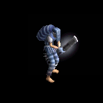 | 能力向上2(90) | 鈍器(260) | 両手剣(180) | 鞭(140) | ステッキ(40) | 宝石(50) | 鎌(180) | ||
| 動物 | セミ1 | ||||||||
| カラフルトカゲ Sp | 動物 | 一般4 | |||||||
| 冠(90) | 鈍器(70) | スリング(50) | 能力向上1(40) | 弓(30) | HP回復(10) | 銃(30) | ||
| 大型骸骨 Sp | アンデット | 一般4 | |||||||
| 鈍器(1560) | スリング(1040) | 矢(870) | 爪(780) | 能力向上1(620) | 魔弾(870) | |||
| カメレオン Sp | 動物 | 一般4 | |||||||
| 冠(90) | 鈍器(70) | スリング(50) | 能力向上1(40) | 弓(30) | HP回復(10) | 銃(30) | ||
| 逃亡ハンター Sp | 人間 | 一般4 | |||||||
| 宝石(1000) | 鈍器(1400) | 両手剣(800) | 槍(700) | ステッキ(600) | グローブ(400) | 鎌(1400) | 箒(700) | |
| 逃亡魔法師Sp[テスト用] | 人間 | 一般4 | |||||||
| 宝石(1000) | 鈍器(1400) | 両手剣(800) | 槍(700) | ステッキ(600) | グローブ(400) | 鎌(1400) | 箒(700) |